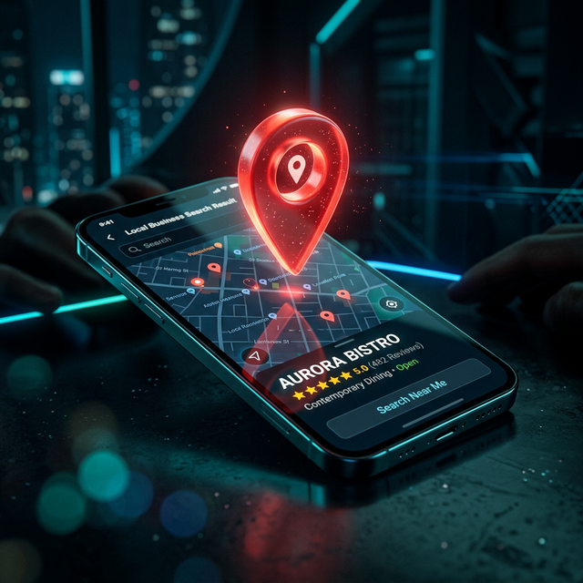
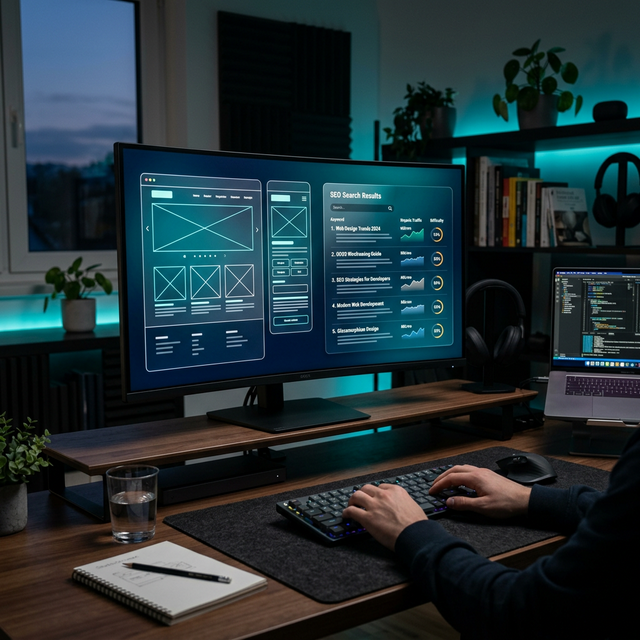

Domine as Buscas e Consolide a Autoridade da sua Empresa
Deixe o amadorismo para trás. Na Blum Digital, unimos engenharia de ponta (SEO, Performance) e um design cinemático para atrair leads de alto poder aquisitivo no Sul de SC e em todo o Brasil.
100%
Satisfação de Clientes
+100
Projetos Entregues
Top 1
Ranking SEO Local
A+
Design de Conversão
Liderando A Evolução Digital Das Maiores Empresas da Região
Empresas de grande porte não aceitam 'achismos'. Na BLUM Digital, sob a liderança de Paulo Daniel Blum, que consolidou sua autoridade no mercado de marketing internacional com uma década de experiência nos EUA, nossa promessa é inegociável: técnica superior, mensuração precisa e design focado inteiramente na taxa de conversão corporativa.
Não importa se o seu objetivo é dominar as buscas locais em Criciúma ou expandir sua operação nacionalmente; nossos consultores e engenheiros certificados, com a expertise de quem vivenciou as tendências globais, alinham o Tráfego Pago e a Infraestrutura de SEO para colocar o seu funil no modo automático.
Conheça Nossa HistóriaSistemas Engrenados Para a Máxima Conversão
SubstituÃmos o modelo tradicional por frameworks completos. Do primeiro clique até o agendamento no WhatsApp de sua equipe de vendas.

Google Meu Negócio
Apareça instantaneamente no mapa da sua cidade. Otimizamos perfis empresariais para gerar o máximo de ligações e rotas de clientes locais, esmagando a concorrência na primeira página.

Web Design e SEO
Desenvolvemos plataformas corporativas ultrarrápidas. Arquitetura voltada a neurovendas e SEO técnico, garantindo que o seu ticket médio não trave no design amador.
Tour Virtual 360
A mais alta tecnologia imersiva do Google Maps aplicada no seu showroom, clÃnica ou empreendimento imobiliário. Elimine objeções virtuais vendendo uma experiência VIP.
Tráfego Pago (Ads)
Gestão avançada de Google Ads e Facebook/Instagram Ads. Posicionamos seus anúncios de maneira cirúrgica, parando o desperdÃcio de capital em públicos frios.

Estratégia Social Media
Sua marca no nÃvel das grandes corporações. Planejamento de feed estético e autêntico, comunicando elegância e desejo direto ao seu público alvo sem robôs.

Consultoria Empresarial
Um departamento virtual inteiro focado nos KPIs do seu negócio. Fazemos diagnósticos regulares para escalar o que funciona e corrigir o que drena o caixa.
Por que a Blum é a Escolha Corporativa?
Abordagem Orientada a Dados
Eliminamos métricas de vaidade. Todas as nossas campanhas são estruturadas sob KPIs de ROI, CPA (Custo por Aquisição) e LTV, garantindo segurança ao seu investimento.
Profissionais Especializados
Contamos com estrategistas digitais, copywriters sêniores e web designers de alto nÃvel em uma única mesa para orquestrar o crescimento do seu negócio.
Tecnologia Proprietária
Aplicamos frameworks otimizados de inteligência digital utilizados pelas gigantes do e-commerce brasileiro e os trazemos para as PMEs do Sul de SC.
O Caminho da Escala e do Sucesso
1. Diagnóstico e Auditoria
Investigamos a deficiência técnica atual do seu posicionamento, descobrindo exatamente onde os concorrentes estão roubando a sua receita.
2. Plano de Ataque
Desenhamos a arquitetura do projeto - abrangendo Tráfego, UI/UX do site, e otimização do Google Maps para a jornada completa do cliente.
3. Execução Primordial
A equipe sênior assume. Lançamos landig pages de alta resposta direta e ativamos campanhas com precisão milimétrica nas configurações de anúncios.
4. Relatórios Executivos
Transparência total. Reuniões de avaliação evidenciando o ROI gerado, Custo de Lead e faturamento estimado advindo das otimizações dos meses decorridos.
Liderando Criciúma e Atendendo Corporações em Todo o BR
Sua empresa merece o contato de uma mesa comercial que fala a mesma linguagem financeira e executiva que você.
Escritório FÃsico / Virtual
Rua Antonio Alves, Vila Zuleima, Criciúma - SC, 88817-220
WhatsApp / Telefone Direto
+55 (48) 9 9221 2339
Horário Corporativo
Segunda a Sexta, das 09:00h às 18:00h
Perguntas Frequentes (FAQ)
Não. Através da nossa forte cultura corporativa digital, gerenciamos o tráfego e construÃmos a infraestrutura técnica (sites, automações) para dezenas de clientes em território nacional com a mesma precisão do atendimento local.
De forma alguma. É por isso que vendemos Sites de Alta Conversão e não apenas vitrines paradas. IncluÃmos tags de rastreamento de anúncios, botão flutuante de WhatsApp para contato instantâneo e uma copy magnética (textos que vendem) junto de um design elegante.
São as ferramentas de Marketing orgânico de maior ROI hoje na internet. Ao apresentar o Tour 360 no seu perfil do Google (GMB), suas métricas de cliques para ligar disparam consideravelmente em comparação aos seus concorrentes locais diretos.
SEO (Search Engine Optimization) é a engenharia por trás do posicionamento orgânico. Resumindo a lógica: quando seu cliente ideal procura pelo seu serviço no Google, ele encontra você ou o seu concorrente? Estar no topo absoluto não é sorte ou coincidência empresarial; é matemática aplicada aos algoritmos do Google, colocando a sua plataforma em evidência técnica para quem já tem a verba de compra na mão.
O raciocÃnio é matemático: na postagem orgânica comum, você entrega conteúdo para quem já te conhece e o algoritmo limita seu alcance quase a zero. No Tráfego Pago, nós injetamos liquidez e "compramos" os dados exatos de novos leads frios que estão buscando a sua solução hoje na sua região. É sair do amadorismo da "curtida e oração" para um controle comercial agressivo, escalável e de alto retorno financeiro.
Se o seu sobrinho consegue gerenciar percepção de marca corporativa, roteirizar funis de venda de alto ticket focados em conversão e modelar a estética mental exata para atrair diretores e empresários milionários... você deve contratá-lo como CEO e dobrar o salário dele urgente! Brincadeiras à parte, Social Media executivo não é sobre "publicar um post e uma hashtag", é sobre criar uma muralha autoral da sua marca em que o cliente olha e decide comprar apenas pela sofisticação visual e técnica transmitida. O nÃvel de jogo não tem comparação.